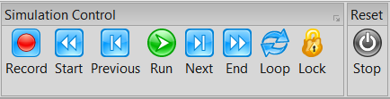

Run, Stop, and Lock Controls
Simulation control in Caedium revolves around the Run, Stop, and Lock toggle buttons in the Home Toolbar. Here we describe how you can use these controls to interact with the simulation.
Simulation Control Toolbar
Run
Click the Run toggle button  to start or resume a simulation. Toggle the Run button to pause a simulation in a defined state after the next simulation step. Use the Run button in preference to the Stop button to maintain a defined simulation state. In the pause state you can extend or reduce the number of simulation steps by changing the simulation Time->Duration property.
to start or resume a simulation. Toggle the Run button to pause a simulation in a defined state after the next simulation step. Use the Run button in preference to the Stop button to maintain a defined simulation state. In the pause state you can extend or reduce the number of simulation steps by changing the simulation Time->Duration property.
Reset (Start)
Click the Start button  to reset a simulation to its initiation conditions.
to reset a simulation to its initiation conditions.
Next
Click the Next button to run a single simulation step, rather than commit to a full simulation run.
Previous
Click the Previous button to rollback the simulation to the previous defined simulation state. The number of historical states available is dependent on the Substance->Solver:RANS Flow->Rollbacks property.
Stop
The Stop toggle button is like an emergency stop. Click the Stop button to stop the simulation immediately and leave the simulation in an undefined state. To return to a defined simulation state, toggle the Stop button to reset the interrupt and then click the Previous button to rollback the simulation to the previous defined simulation state.
If the simulation fails for some reason, e.g., a solver encounters a singularity, then the simulation will also be in an undefined state. As with the interrupt case, use the Previous button to reverse the simulation to the previous defined state or click the Start button to reset the simulation.
Lock
Click the Lock toggle button  to disconnect the simulation controls (e.g., Run) from running the simulation, so you can configure time-dependent geometry motion for results post processing, e.g., defining the motion of a cutting plane. Toggle the Lock button to return Caedium to simulation mode and return the simulation Time property to the pre-lock value ready to resume running the simulation.
to disconnect the simulation controls (e.g., Run) from running the simulation, so you can configure time-dependent geometry motion for results post processing, e.g., defining the motion of a cutting plane. Toggle the Lock button to return Caedium to simulation mode and return the simulation Time property to the pre-lock value ready to resume running the simulation.
Feedback
Questions? Ideas? Problems?